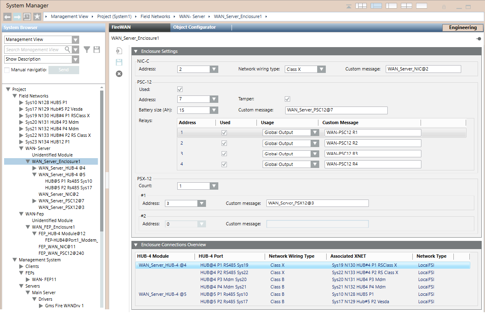

Fire WAN Enclosure Reference
This section provides some reference information about the Fire WAN Enclosure configuration parameters.
For a step-by-step guide to the Enclosure configuration, see the workflow in Configuring a Fire WAN.
For instructions about the hardware installation, see Installing Fire WAN Enclosure.
Enclosure Configuration Parameters
In Engineering mode, the FireWAN tab of the Enclosure node provides the Enclosure Settings expander, to configure the enclosure components, and the Network Connection Overview, to display the enclosure configuration in a compact view.
The Enclosure Settings expander includes three sections:
- NIC-C section:
- Address: HNET address of the enclosure.
- Network wiring type: Class B or Class X.
- Custom message: Description of the NIC-C card, used in System Browser and Event List.
- PSC-12 section:
- Used: Check box to enable the configuration of the PSC-12 power supply.
- Address: HNET address of the power supply unit.
- Tamper: Check box to enable the tamper detection.
- Battery size (Ah): Battery capacity, which can be set to 15, 31, 75, or 100 Ah.
- Custom message: Description of the PSC-12 unit.
- Relays 1 to 4:
- Used: Check box to enable the configuration of the corresponding.
- Usage: General output or Global alarm (Desigo CC event). - PSX-12 section:
- Count: Number of additional power supply units.
- Address: HNET address of the PSX-12 unit #1.
- Custom message: Description of the PSX-12 unit #1.
